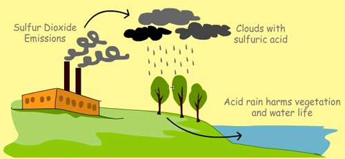

What are the effects of air pollution?
Acidification:
Chemical reactions involving air pollutants can create acidic compounds which can cause harm to vegetation and buildings. Sometimes, when an air pollutant, such as sulfuric acid combines with the water droplets that make up clouds, the water droplets become acidic, forming acid rain. When acid rain falls over an area, it can kill trees and harm animals, fish, and other wildlife.

Acid rain destroys the leaves of plants:
When acid rain infiltrates into soils, it changes the chemistry of the soil making it unfit for many living things that realy on soil as a habitat or for nutrition. Acid rain also changes the chemistry of the lakes and streams that the rainwater flows into, harming fish and other aquatic life.
Eutrophication:
Rain can carry and deposit the Nitrogen in some pollutants on rivers and soils. This will adversely affect the nutrients in the soil and water bodies. This can result in algae growth in lakes and water bodies, and make conditions for other living organism harmful.
Ground-level ozone:
Chemical reactions involving air pollutants create a poisonous gas ozone (O3). Gas Ozone can affect people’s health and can damage vegetation types and some animal life too.
Particulate matter:
Air pollutants can be in the form of particulate matter which can be very harmful to our health. The level of effect usually depends on the length of time of exposure, as well the kind and concentration of chemicals and particles exposed to. Short-term effects include irritation to the eyes, nose and throat, and upper respiratory infections such as bronchitis and pneumonia. Others include headaches, nausea, and allergic reactions. Short-term air pollution can aggravate the medical conditions of individuals with asthma and emphysema.Long-term health effects can include chronic respiratory disease, lung cancer, heart disease, and even damage to the brain, nerves, liver, or kidneys. Continual exposure to air pollution affects the lungs of growing children and may aggravate or complicate medical conditions in the elderly.